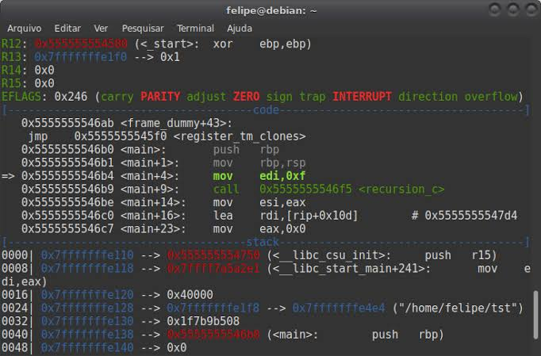
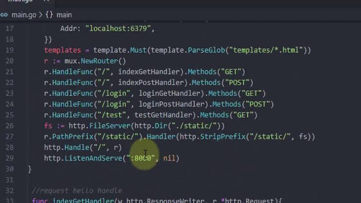
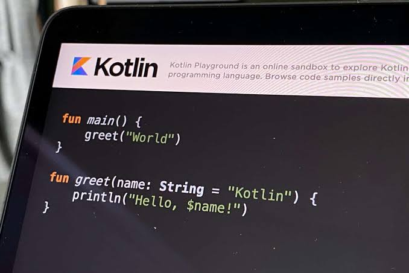
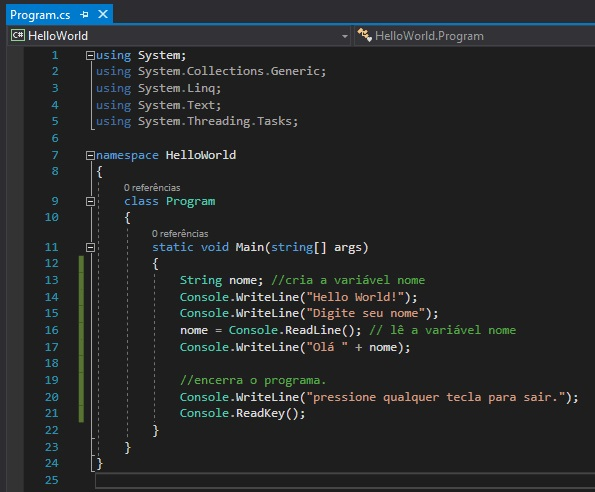
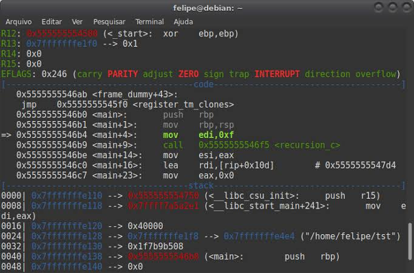
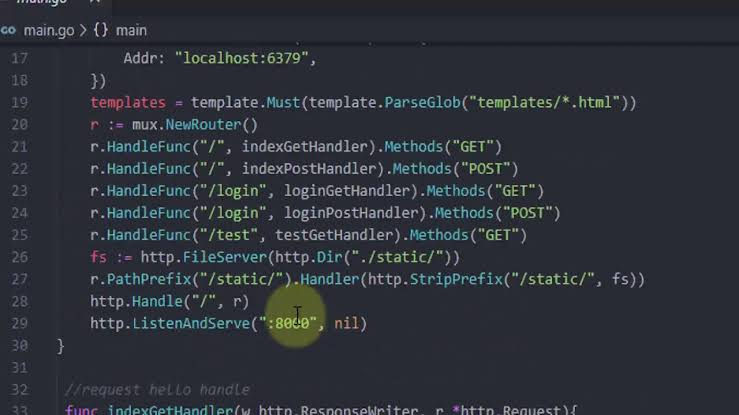
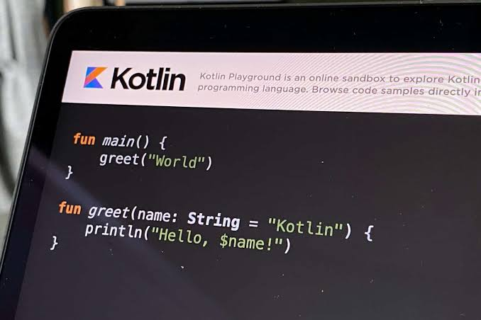
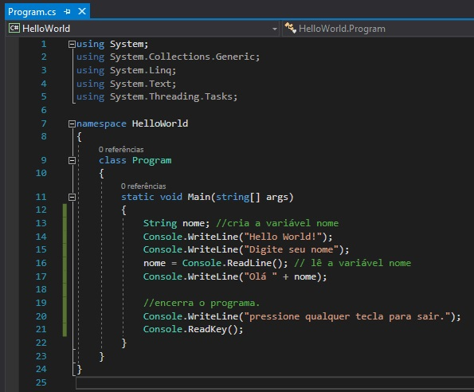

Os desenvolvedores têm usado linguagens de programação por décadas para construir novas ferramentas engenhosas e agilizar o processo de codificação. Até agora, funcionou muito bem para nós. Os avanços nas linguagens de programação e no desenvolvimento de software em geral nos ajudaram a ultrapassar os limites do que é possível. As empresas tornaram-se mais eficientes...
10 linguagens de programação antigas que continuam populares em 2022
Computadores foram criados a mais de 50 anos atrás, e junto dele o desenvolvimento de softwares a partir de linguagens de programação também foi evoluindo no decorrer desses anos — contando com novas funções e a possibilidade de criação de aplicações com funções avançadas e que poderiam trazer mais usuários ao mundo dos PCs...
Programação: conheça as 3 linguagens de programação do futuro
Seja para criar o celular mais avançado do mundo ou criar robôs com personalidades bem parecidas com as nossas, saber programar se torna uma habilidade tão interessante quanto indispensável. Veja nesse post 3 linguagens de programação que você pode aprender para se preparar para o futuro. Futuramente, as carreiras ligadas à tecnologia serão as que mais oferecerão...
As 10 linguagens de programação que estarão em alta em 2023
Conhecimento em linguagens de programação úteis e confiáveis é uma exigência dentro do mercado de desenvolvimento, a fim de possibilitar a codificação de aplicações seguras, de fácil usabilidade e escaláveis. Por conta disso, especialistas em Python, JavaScript e HTML sempre são bastante demandados pelas empresas. Atualmente, existem mais de 700 linguagens de...
25 anos de Java. Um marco incrível para qualquer linguagem de programação. Para o Java e sua comunidade, essa é uma conquista especialmente significativa, uma vez que muitos duvidaram do poder do Java de permanecer. Deve estar claro para todos que não apenas ele segue firme e forte, como possui um brilhante futuro pela frente. Vamos recordar um pouco e também pensar sobre o que queremos...
Low-code e no-code: Conheça o futuro da programação
A tecnologia low-code/no-code chegou para deixar os métodos tradicionais de desenvolvimento de softwares e apps para trás. O novo conceito de programação mostra-se mais intuitivo, simplificado e independente. Na Era da Informação, a Transformação Digital tornou-se uma realidade dentro das empresas. Isso ocorre porque as organizações buscam atender...
Low-code e no-code: Por que tanto auê entre as startups?
O ecossistema está com os olhares voltados às tecnologias low-code e no-code, que possibilitam o uso de baixo ou nenhum código no desenvolvimento de softwares e apps. De um lado, startups lucram oferecendo estas plataformas para o mercado. Do outro, startups se rendem aos encantos de ambas as tecnologias para o desenvolvimento de seus produtos....
Alguns cientistas afirmam que o tempo se move em uma taxa de evolução constante. Os mais espertos, argumentam que tudo muda na velocidade da luz. Porém, ninguém explica a transformação exponencial e continua que vivemos no mundo da tecnologia. Esse contexto segue se acelerando a cada piscar de olhos. Caso você esteja procurando a próxima grande novidade em termos de ferramentas e habilidades de desenvolvimento...
A linguagem de programação é de fato a unidade fundamental do mundo atual da tecnologia. É considerado como o conjunto de comandos e instruções que damos às máquinas para realizar uma determinada tarefa. Por exemplo, se você der algum conjunto de instruções para adicionar dois números, a máquina fará isso por você e lhe dará a resposta correta de acordo. Mas você sabia que as linguagens de programação têm uma longa e rica...
A linguagem de programação é de fato a unidade fundamental do mundo atual da tecnologia. É considerado como o conjunto de comandos e instruções que damos às máquinas para realizar uma determinada tarefa. Por exemplo, se você der algum conjunto de instruções para adicionar dois números, a máquina fará isso por você e lhe dará a resposta correta de acordo. Mas você sabia que as linguagens de programação têm uma longa e rica história...


 


